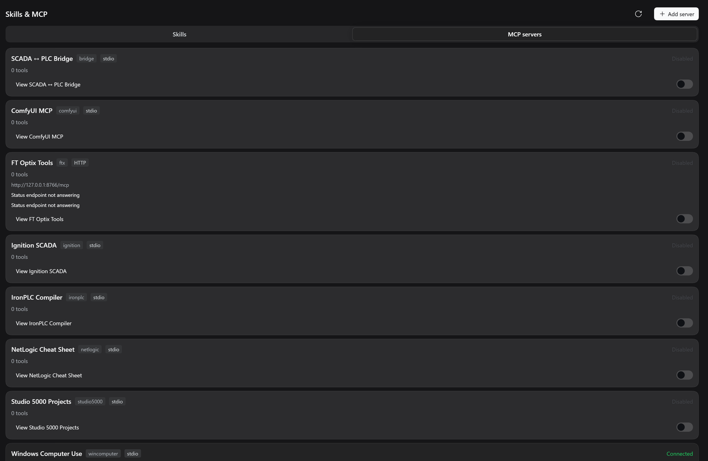
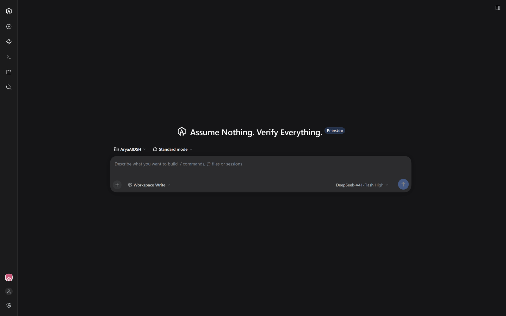
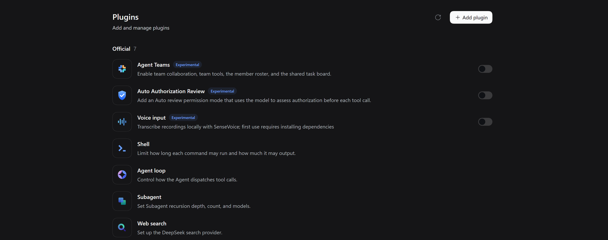
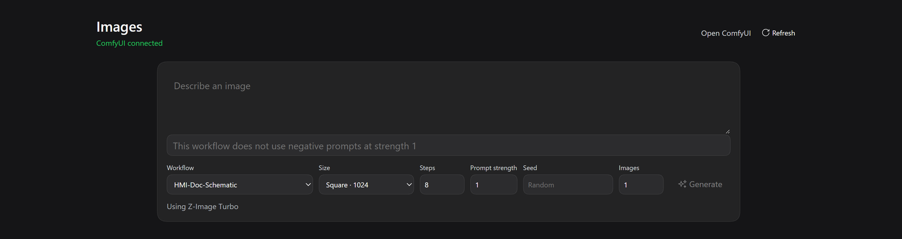

Work in a workspace, or none
Point the agent at a folder it plans and edits in. When there is no folder yet, a No Repo chat still works.
Coding agent & automation engineer companion
Coding agents are written for people who ship software. AryaAI is written for the people who program machines — the PLC, the motion controller, the HMI, and the drawings those programs come from.
The same agent that edits a repository can read a Logix export, a DXF drawing, an Ignition project and an IEC 61131-3 program — and sit beside the engineering software already open on your desk.
Current version 0.8.1 — see the releases page · installer is unsigned — Windows may ask you to confirm it.
Preview release — read before you install
.acd, builds it offline, and reaches a controller for
mode reads, uploads and mode changes..l5x or an offline copy of an .acd, and every other tool
is bounded the same way. What AryaAI writes is a file you review.Built for a different desk
You are not in a monorepo. You are in Studio 5000 or another Logix tool, MotionWorks IEC or another motion IDE, FactoryTalk View or Optix or Ignition for the HMI, a stack of DXF prints — and a controller that must not be downloaded to by accident.
AryaAI is built to remove the support call. When something on the plant misbehaves, the alternative to an answer is a vendor support licence, a ticket queue and a phone line that keeps business hours. She is meant to be that support line instead: she reads the project already on the PC — the Logix export, the motion project, the drawing set — and answers where the work is.
A general coding agent
.l5x as an opaque blob of XMLAryaAI
Not a mockup
Every image below is a real screen capture of the interface. Nothing here is a rendering or a design comp.



Why the automation focus
You are in Studio 5000 or another Logix tool, MotionWorks IEC or another motion IDE, FactoryTalk View or Optix or Ignition for the HMI, a stack of DXF prints — and a controller that must not be downloaded to by accident.
What you can do today
Everything below is in the installed application. No account, no cloud project, no upload of your plant’s source.
Point the agent at a folder it plans and edits in. When there is no folder yet, a No Repo chat still works.
The agent keeps its plan in the workspace, and you can open that plan beside the chat instead of guessing what it is about to do.
Open a DXF from the file tree as a drawing. Scroll to zoom, drag to pan. The agent can list sheets, read the drawing, and apply an edit the drawing service checks first.
Sign in from Settings, then clone a repository onto this PC and open it as a workspace. The token stays in your credential store.
Add a skill that says when it applies and what it should do — your alarm naming convention, your cam library, your HMI face.
A workflow can run multiple agents against the same task, with the work and its results kept where you can read them.
Browser use ships running, with Playwright’s browser-control tools and a Chromium that travels inside the installer. Every live session gets its own browser profile, so she never reaches for the one you are signed into.
Open any HTTP(S) address — including a loopback service on this PC — in the right sidebar and keep it there while you work. On the desktop window the toolbar can drop a capture of the page into the chat.
Images
Two halves. An Images page for generating directly against the ComfyUI
you already run — your checkpoints, your saved workflows, by name. And a
ComfyUI MCP server, Comfy Org’s own with the
comfy-cli engine it invokes, so the agent can operate the workflow itself.

AryaAI probes the ComfyUI you point it at, discovers the checkpoint and Z-Image Turbo models already installed there, and offers them by name.
It reads ComfyUI’s own workflow catalog. A standard-node graph is checked against the models actually installed before it is compiled and run — so a missing model is a refusal, not a failed render.
Your browser never contacts ComfyUI. The application does, and it handles cancellation and history for you — which is why the same feature works in the desktop window and the WebUI without configuring an origin.
What the Images page does not cover yet ControlNet, LoRA, custom nodes and three-dimensional graphs stay visible in ComfyUI but unavailable from the Images page. Generated files over 50 MB are refused, and deleting a gallery entry leaves the file in ComfyUI’s output folder. Connection settings take a local or a remote server address, test the connection, and save it without a restart.
The engineering desk
Seven of the eight run on the Python or Node that AryaAI carries, so your plant PC does not need its own toolchain for them. FactoryTalk Optix Tools cannot be packed into the installer — it speaks to Optix Studio’s own service on this PC, and reports when that service is absent. Enable a row from the MCP list, and turn it off again.
| Tool | What the agent can do |
|---|---|
| Studio 5000 Projects | Read an exported .l5x: controller, tags, UDTs, AOIs, modules, routines, and ladder as text with rung comments. |
| Ignition SCADA | Read tags, Perspective views, scripts, UDTs, alarms and named queries from an Ignition 8.1 export or an 8.3 project directory. |
| SCADA ↔ PLC Bridge | Match an Ignition project to a Logix export, tag by tag, follow one tag from its OPC item path into the rungs that use it, and list what exists on only one side. |
| IronPLC Compiler | Check, compile and run IEC 61131-3 Structured Text on a soft-PLC, including the dialects used by CODESYS and TwinCAT. |
| NetLogic Cheat Sheet | Look up FactoryTalk Optix NetLogic patterns and the C# that goes with them, from a fixed copy of Rockwell’s public cheat sheet. |
| FactoryTalk Optix Tools | Talk to Optix Studio’s own service on this PC. Turn it off and AryaAI stops waiting for it. |
| Windows Computer Use | Find windows, read UI Automation elements, and see the screen with OCR in English and Chinese. Mutating automation is refused while the kill switch is on. |
Meet Arya
Arya is a companion you can pick up and move around the desktop: drag her, pin her, scale her, and she follows the mouse. She shows progress while a task runs, and can give a short first-person summary of what finished. The poses below are the design system she is drawn from — the shipped pet animates from a sprite atlas, and not every pose has a signal wired to it yet.
Everything is a plugin
A capability is a plugin. The desktop window and the web UI load the same list. Remove the row, or disable it, and that capability is gone on the next start.
Ship in the installer and are on for every desktop install — GitHub, No Repo, the DXF viewer, and the MCP panel.
Also in the installer, and off until you enable them — except Windows Computer Use, which starts with the app. A factory tool you do not have reports itself in the MCP panel instead of blocking startup.
From the Plugin Market, a package name, a Git repository, or a folder on this PC. They live in your profile and survive the next update.
Saying this plainly is part of the product
An agent that overstates what it can reach is dangerous in a plant. These limits are published, not discovered.
Reading a controller — its mode, live tag values, diagnostics — is read only. Uploading the controller into a new local file, changing the controller mode, and downloading are separate tools that each raise their own approval prompt naming the controller, the resolved FactoryTalk Linx route, and the exact file and its hash. Online edits, forces, bit toggles and data writes are refused permanently, and no request from you authorizes them. Reading a project and changing a running controller stay deliberately different acts.
A writer for the project file format was tried and withdrawn, because it could replace a real program body with an empty one and report success. The offline writers that replaced it were retired for the same reason. What ships works on a staged copy and drives the running MotionWorks IEC 3 Pro IDE through its own editors: it reads the project model, types, libraries and variables, changes POU Structured Text and declarations, assigns tasks and POUs, runs Build and Make, and reads the compiler’s own verdict and error text — so the compiler is the evidence, not a writer’s claim. It never downloads to a controller and never commands motion.
FactoryTalk Optix is a different product. The Optix row talks to Optix Studio, and only when its service is running on this PC and you have turned the row on.
Windows Computer Use can see a window, read its UI Automation tree and OCR the screen without clicking anything. While the kill switch is on, every mutating action — mouse, keyboard, element clicks, shortcuts — is refused, and only read-only inspection runs. Skills & MCP puts the kill switch and the dry run beside each other with Save and restart.
The drawing you open from the file tree is a DXF. If your prints are DWG, export them first.
Ready when your desk is
AryaAI is a Windows desktop application because the engineering tools live on the PC in front of you. Chats, settings and any plugin you add stay through the next update.
AryaAI 0.7.0 — see the releases page · on DeepSeek Harness 0.2.0-rc.2 · MIT licensed